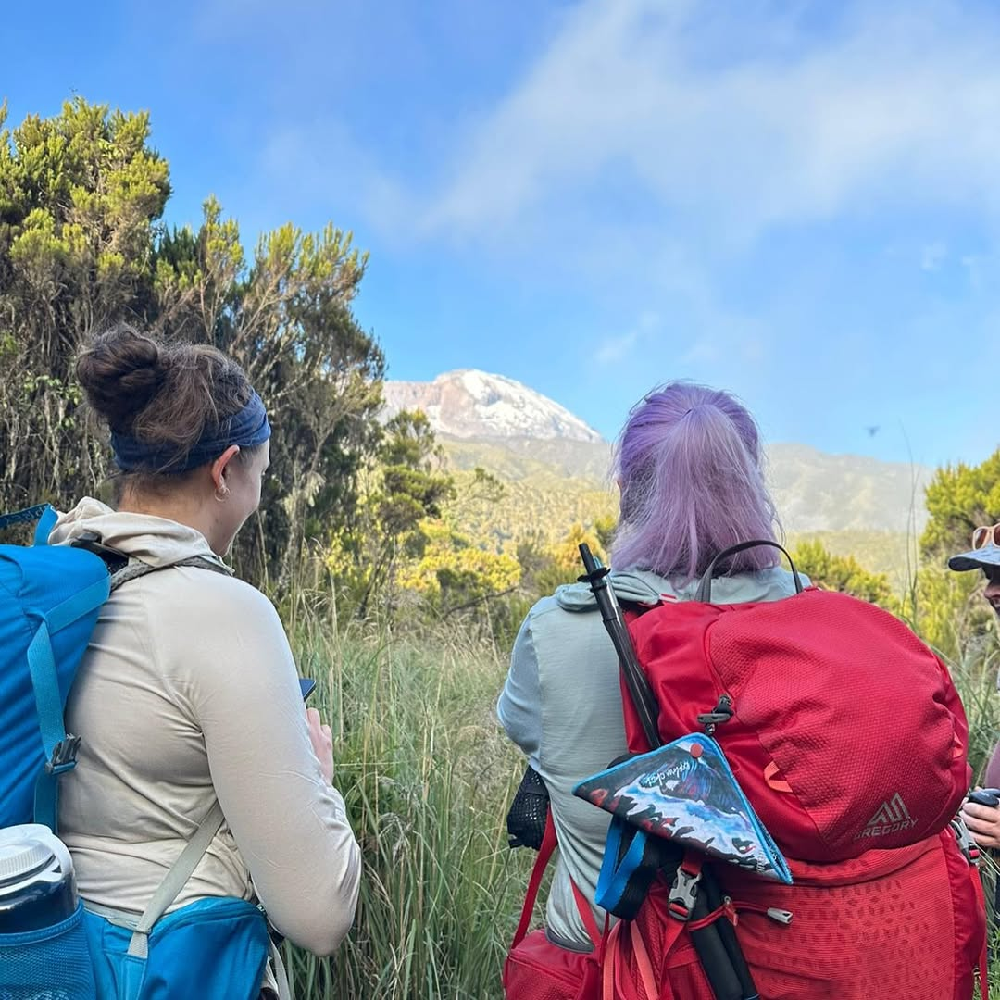
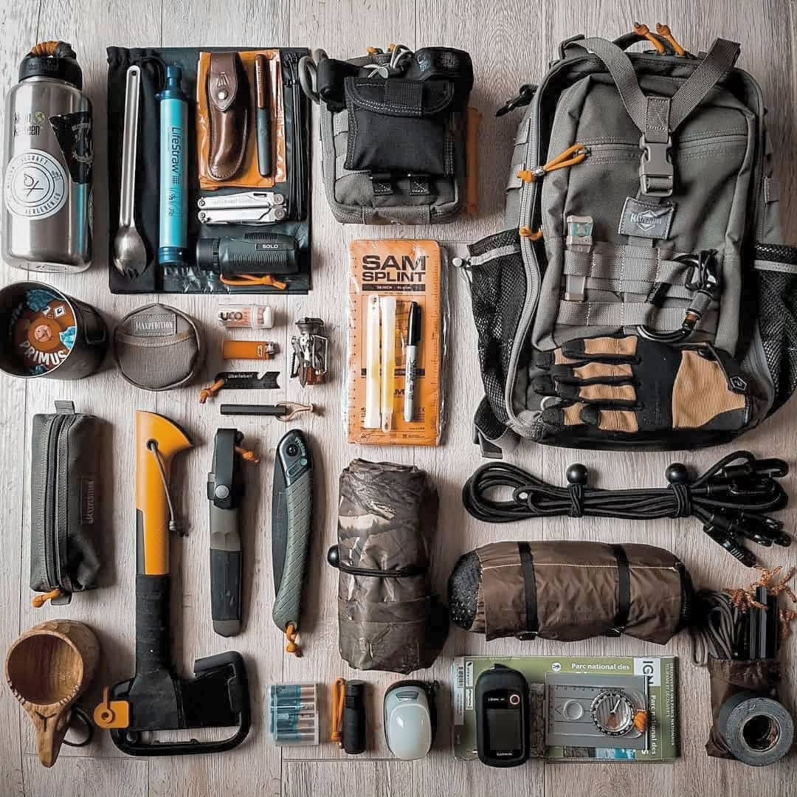
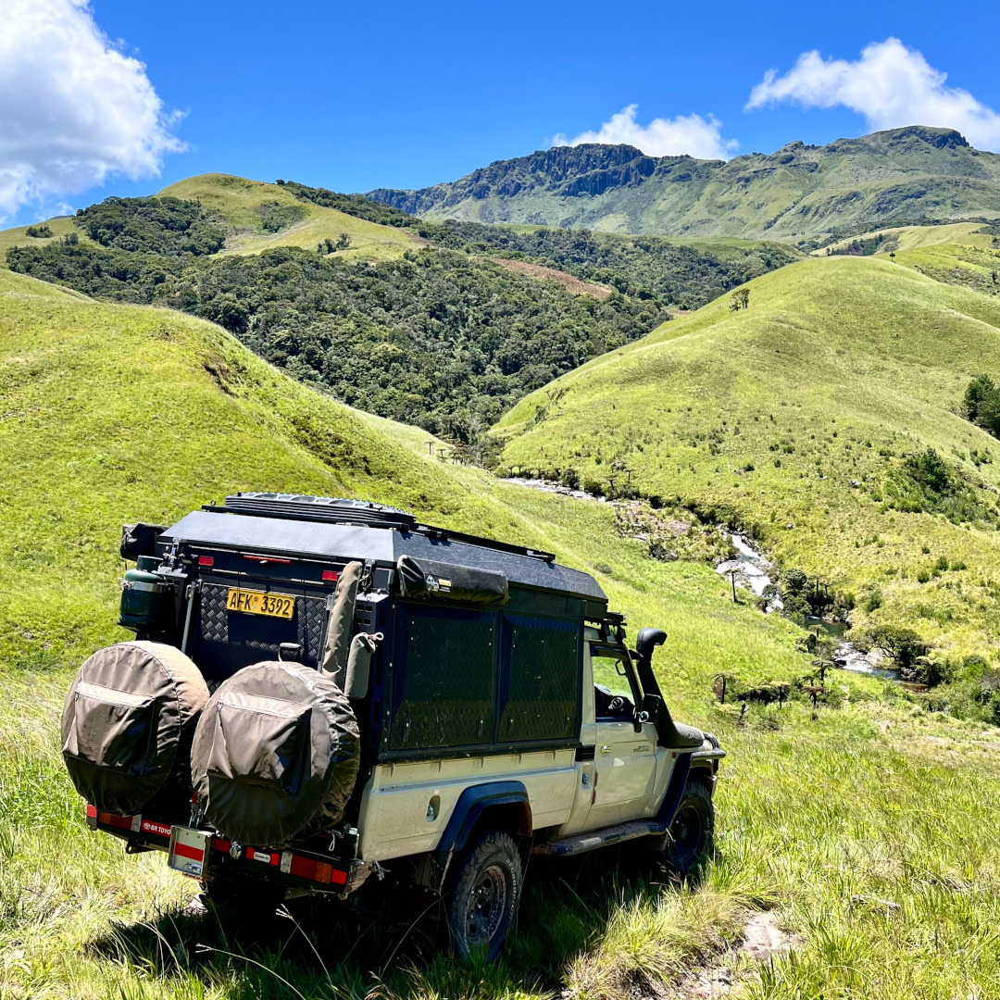
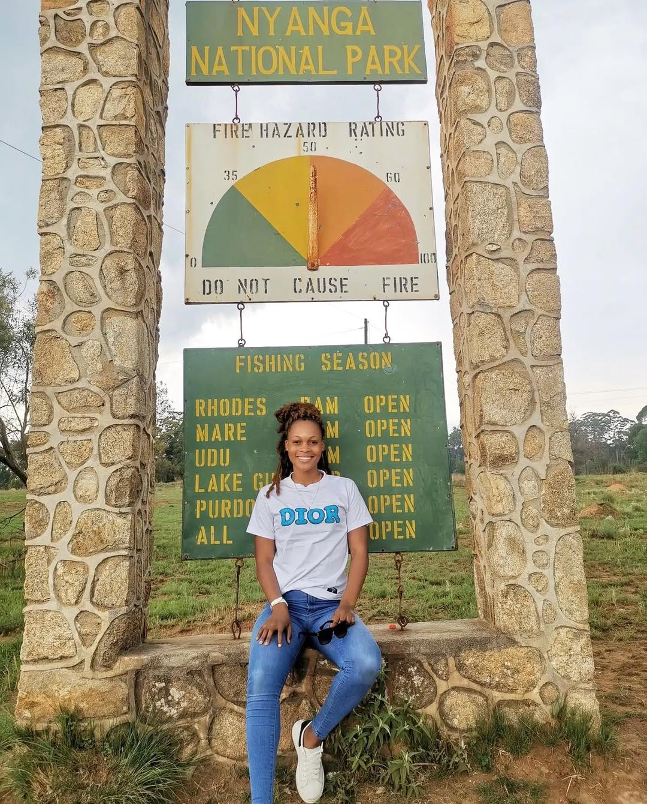

Hiking Resources
Your guide to safe, enjoyable, and well-prepared hiking in Zimbabwe.

- Check weather forecasts before heading out.
- Inform someone of your hiking route and expected return.
- Carry adequate water and food supplies.
- Wear proper footwear for your trail difficulty.
- Be aware of wildlife and avoid risky encounters.

- Hiking boots or trail shoes with good grip.
- Lightweight, weather-appropriate clothing.
- First aid kit and emergency blanket.
- Navigation tools (map, compass, GPS).
- Headlamp or flashlight with extra batteries.

Zimbabwe’s climate varies by region. Eastern Highlands are cooler and wetter, while lowveld areas can be hot and dry. Always check:
- Zimbabwe Meteorological Services for forecasts
- Local park visitor centres for conditions
- Trail-specific weather patterns

Some trails require permits or entry fees:
- National Parks (e.g., Matopos, Nyanga): Entry fees vary by citizenship.
- Private conservancies: Contact owners for rates.
- Guided hikes: Fees may include permits.